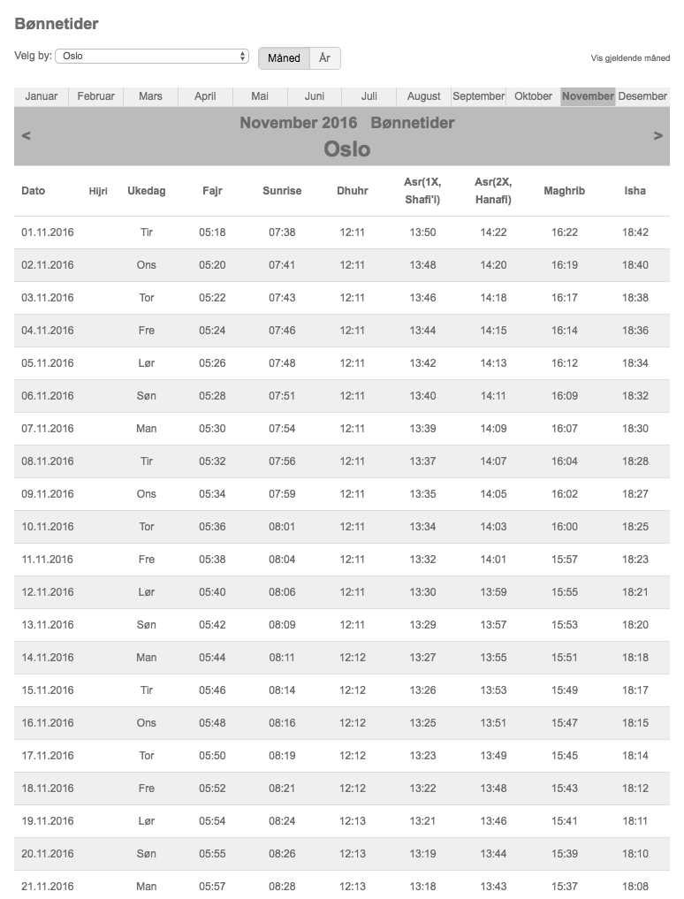

A friend of mine approached me and told me about his mother-in-law. She does not know how to read or write, and now that she lives on her own she is frustrated that she cannot figure out the prayer times.
In case you don't know, muslims pray 5 times a day. And the prayer times vary according to the position of the sun on the sky, which in turn varies according to the position of the earth in relation to the sun. That's why most people use timetables which look something like this: 